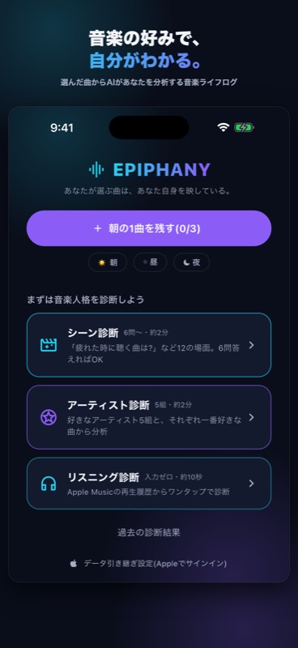
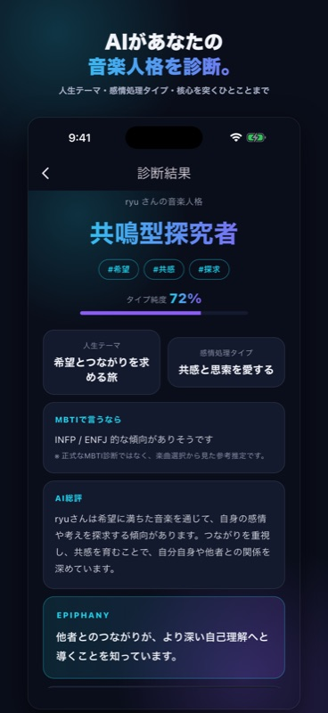
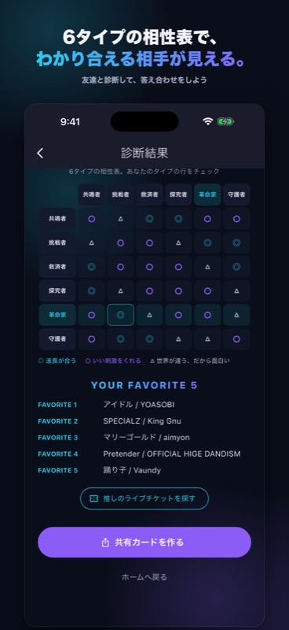
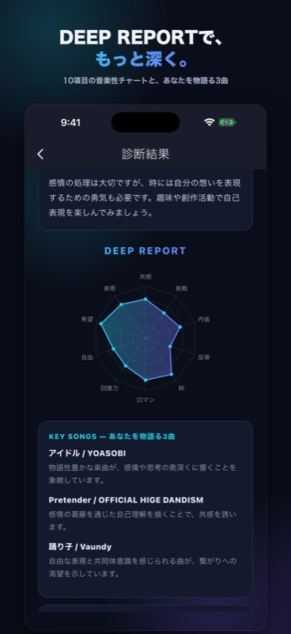
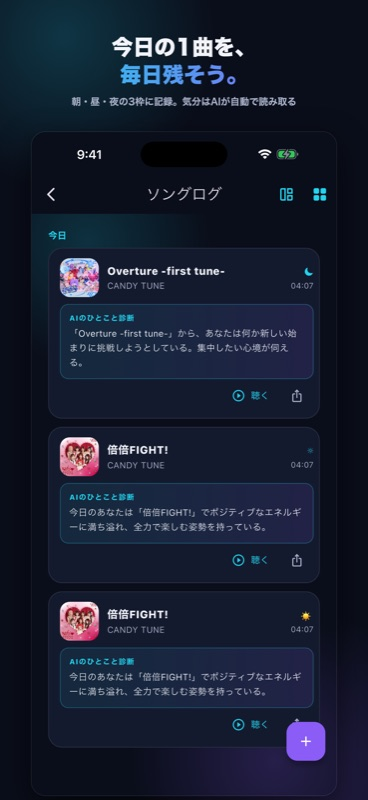
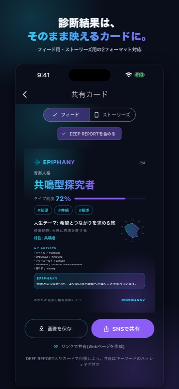

EPIPHANY
「疲れた夜に聴く曲は?」——選んだ数曲から、AIがあなたの音楽人格を診断。毎日の1曲を残すほど、あなたの輪郭がくっきり浮かびあがる、音楽ライフログアプリ。
無料でダウンロード / iOS 対応

Music Personality
感情や人生の場面をめぐる問いに、曲で答えていくだけ。「シーン診断」は6問から、「アーティスト診断」は好きな5組を選ぶだけ。Apple Musicの再生履歴からワンタップで診断する「リスニング診断」も。あなたが"何に惹かれる人"なのかをAIが読み解きます。

Type Chemistry
6つの音楽人格には、それぞれ波長の合うタイプ・刺激をくれるタイプがあります。あなたのタイプを起点にした相性表を結果画面でチェック。友達と診断して答え合わせをするのも楽しい。

Deep Report
10項目の音楽性チャート、あなたを物語る3曲への深掘り、相性の良い音楽人格。一歩踏み込んだ分析レポートを、広告視聴または買い切りで解放できます。

Daily Song Log
朝・昼・夜の3枠に「今日の1曲」を記録(選ぶだけ・約30秒)。曲の雰囲気から、その日の気分をAIが自動で読み取ります。写真を添えれば、その日の情景ごと残せる。ログがたまるほど、あなたの音楽人格は育っていきます。

Share Cards
よく聴いた曲のジャケットを3×3に並べた"私を語る9枚"カード、診断結果、期間のまとめ——ぜんぶ美しいカード画像に。フィード用・ストーリーズ用の2フォーマットで、そのままシェアできます。

How It Works
STEP 1
シーン診断(6問〜)・アーティスト診断(好きな5組)・リスニング診断(再生履歴からワンタップ)。答えづらい設問はスキップOK。
STEP 2
曲名は実在の楽曲からサジェスト。曲を選べばアーティスト名は自動で入るから、入力がとにかくラク。
STEP 3
診断結果はそのままSNS向けカードに。友達と見せ合って、相性の答え合わせも。
FAQ
ダウンロードは無料で、診断もソングログも無料でお使いいただけます。より深い分析「DEEP REPORT」は、広告視聴(その診断のみ)または買い切り(¥500)で解放できます。
本アプリ内での楽曲そのものの再生や歌詞の表示は行いません。記録した曲はワンタップで普段お使いの再生アプリへ移動できます。
あなたが選んだ楽曲・アーティストをもとに、AIが音楽人格タイプ・人生テーマ・感情の処理タイプなどを分析します。本アプリの診断はエンターテインメントを目的としたものであり、医学的・心理学的な診断行為ではありません。
設定画面からAppleでサインインしていただくと、診断結果やソングログを新しい端末に引き継げます。
Download
選んだ曲が、あなたを語りだす。
本アプリの診断はエンターテインメントを目的としたものであり、医学的・心理学的な診断行為ではありません。
Apple および Apple ロゴは、米国およびその他の国で登録された Apple Inc. の商標です。